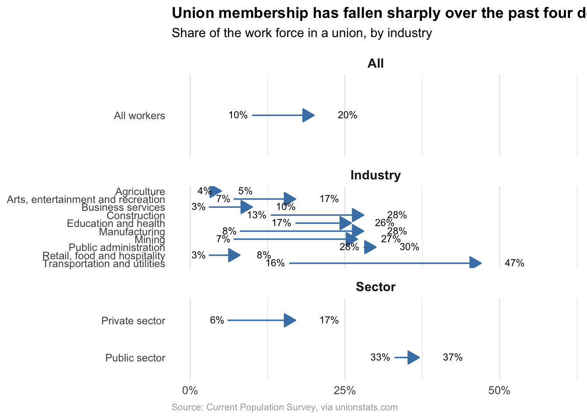

HW02-P2 Adv Data Viz
Instructions
Task: Open up the New York Times article A Summer of Strikes, and scroll down to the plot titled “Union membership has fallen sharply over the past four decades (Share of the work force in a union, by industry)”.

Using ggplot2 and other tools in R, recreate this plot. Note that you will need to create the data underlying the plot yourself. You can create this data in R with tibble(). You can also write the data in Excel or Google Sheets and export it as a CSV file.
Requirements:
- Overall
- Panels for “All workers”, “By Sector”, and “By Industry” are shown.
- Arrows showing the change from 1983 to 2022 are shown.
- Note: be sure that the arrows all point in the correct direction!
- The actual percentages in 1983 and 2022 are shown as text.
- X-axis tick marks are at 0, 25, and 50.
- Plot title says “Union membership has fallen sharply over the past four decades”.
- Plot subtitle says “Share of the work force in a union, by industry”.
- Resource reflection
- At least 1 resource is listed
- At least 3 sentences about resources and their helpfulness in the task
Bonus: Additional possibilities to enhance your visualization include adjusting the default aesthetics of the arrows, aligning your plots neatly, and adding margins in order to left-align the y-axis text.
Setup
Code
# Code for generating the data (if using the tibble() approach)
# Create the dataset
union_data <- tibble(
group = c("All workers",
"Private sector", "Public sector",
"Transportation and utilities", "Manufacturing", "Mining",
"Construction", "Education and health", "Arts, entertainment and recreation",
"Business services", "Retail, food and hospitality", "Public administration",
"Agriculture"),
category = c("All",
"Sector", "Sector",
"Industry","Industry","Industry",
"Industry","Industry","Industry",
"Industry","Industry","Industry",
"Industry"),
start_1983 = c(20, 17, 37, 47, 28, 27, 28, 26, 17, 10, 8, 30, 5),
end_2022 = c(10, 6, 33, 16, 8, 7, 13, 17, 7, 3, 3, 28, 4)
)Visualization
Code
ggplot(union_data) +
# Arrows
geom_segment(aes(x = end_2022, xend = start_1983,
y = fct_rev(group), yend = fct_rev(group)),
arrow = arrow(length = unit(0.15, "inches"), type = "closed"),
color = "steelblue", size = 0.6) +
# 2022 labels
geom_text(aes(x = end_2022, y = fct_rev(group),
label = paste0(end_2022, "%")),
hjust = 1.2, vjust = 0.4, size = 3, color = "black") +
# 1983 labels
geom_text(aes(x = start_1983, y = fct_rev(group),
label = paste0(start_1983, "%")),
hjust = -1.2, vjust = 0.4, size = 3, color = "black") +
# Facets
facet_wrap(~category, scales = "free_y", ncol = 1,
labeller = labeller(category = c(
"all" = "ALL WORKERS",
"sector" = "BY SECTOR",
"industry" = "BY INDUSTRY"))) +
# X-axis
scale_x_continuous(limits = c(0, 60),
breaks = c(0, 25, 50),
labels = c("0%", "25%", "50%")) +
labs(
title = "Union membership has fallen sharply over the past four decades",
subtitle = "Share of the work force in a union, by industry",
x = NULL, y = NULL,
caption = "Source: Current Population Survey, via unionstats.com"
) +
theme_minimal(base_size = 12) +
theme( panel.grid.major.y = element_blank(),
strip.text = element_text(face = "bold", size = 11),
plot.title = element_text(face = "bold", size = 13),
plot.subtitle = element_text(size = 11, margin = margin(b = 10)),
plot.caption = element_text(size = 8, color = "darkgrey", hjust = 0),
axis.text.y = element_text(size = 9)
)
Resources Reflection (required)
List the resources you used to help with this assignment then write 3-5 sentence reflection on which resources were most helpful in finishing this task.
Resources:
- R for Data Science, Chapter on Data Visualization
- ggplot2 documentation (for geom_segment(), geom_text(), and facet_wrap())
- Stack Overflow discussions on aligning labels and adjusting hjust
Reflection: The most helpful resource for me was the R for Data Science chapter on data visualization because it gave me a clear reminder of how to structure plots in ggplot2. I also found the official ggplot2 documentation useful, especially for understanding how to control arrows with geom_segment() and how to position text labels. Finally, looking at Stack Overflow helped me troubleshoot small alignment issues, like how to adjust hjust so the percentages didn’t overlap with the arrows. Together these resources made it much easier to recreate the New York Times plot in a way that looks clean and readable